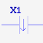
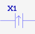
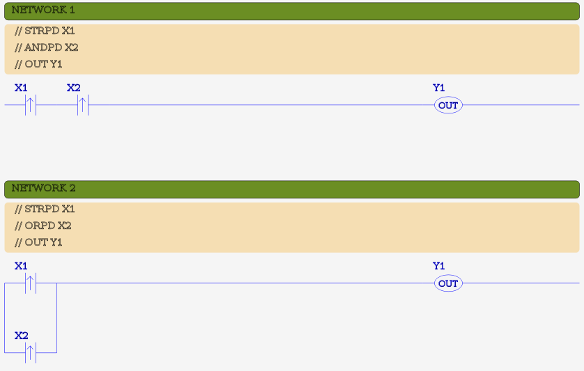
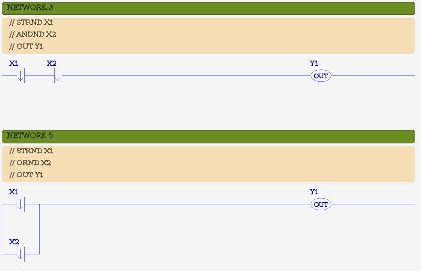

MBLogic
for an open world in automation
MBLogic
for an open world in automation
Edge Contact Instructions
Edge contact instructions are a type of Boolean input instruction, and operate in a manner similar to that of the normal Boolean input instructions. The difference is that they are one-shot instructions and output a true for one scan only.
| Instruction | Description | # Params | X | Y | C | T | CT | SC | Symbol |
|---|---|---|---|---|---|---|---|---|---|
| ANDND | AND negative differential | 1 | X | X | X | X | X | X |  |
| ANDPD | AND positive differential | 1 | X | X | X | X | X | X |  |
| ORND | OR negative differential | 1 | X | X | X | X | X | X | |
| ORPD | OR positive differential | 1 | X | X | X | X | X | X | |
| STRND | STORE negative differential | 1 | X | X | X | X | X | X | |
| STRPD | STORE positive differential | 1 | X | X | X | X | X | X |
Edge contact instructions can be categorised as "positive differentiate" and "negative differentiate" instructions. "Positive differentiate" instructions are true for one scan when the logic stack makes a false to true transition. "Negative differentiate" instructions are true for one scan when the logic stack makes a true to false transition.
The address used as a parameter is used for an AND, OR, or STORE the operation. It is not necessary to specify an address to store the one shot state, as the instruction stores this information automatically internally.
Example:
NETWORK 1 STR X1 ANDPD C1 OUT Y1 NETWORK 2 STR X2 ANDND C2 OUT Y2 NETWORK 3 STR X3 ORPD C3 OUT Y3 NETWORK 4 STR X4 ORND C4 OUT Y4 NETWORK 5 STRPD X5 OUT Y5 NETWORK 6 STRND X6 OUT Y6
Ladder Examples
The following shows examples in ladder format. Each example shows the IL code as comments, followed by the ladder equivalent.
 